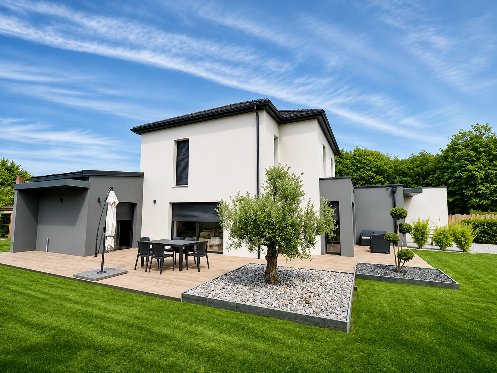

Depuis 1985, à vos côtés dans le Bessin Bayeux & ses alentours · Calvados
ENTRETIEN & PROPRETÉ DEPUIS 1985
Un seul partenaire pour tous vos besoins d’entretien.
JMC Propreté Nature accompagne les agences immobilières, les copropriétés, les entreprises, les commerces, les restaurants et les particuliers dans l'entretien de leurs espaces intérieurs et extérieurs, à Bayeux, dans le Bessin et plus largement dans le Calvados.
Une entreprise locale·Quatre métiers complémentaires

AU SERVICE DE VOS ESPACES
Syndics & copropriétés
Entreprises & commerces
Agences immobilières
Particuliers
NOS ACTIVITÉS
Quatre savoir-faire. Une même attention.
Quatre métiers complémentaires pour l'entretien de vos espaces intérieurs et extérieurs, avec des prestations régulières ou ponctuelles adaptées à vos besoins.
01 / EXTÉRIEURS
Espaces verts
Tonte des pelouses, taille des haies et arbustes, désherbage et entretien des espaces extérieurs.
Particuliers & professionnels
Découvrir cette activité ↗
L’entretien de vos espaces verts s’envisage selon la configuration de votre terrain, son usage et la saison.
Présentez-nous votre jardin ou vos abords professionnels et la fréquence d’entretien souhaitée. Nous pourrons préciser ensemble les interventions adaptées.
Entretien régulier des parties communes, des locaux professionnels et des espaces de travail. Nettoyage approfondi et remise en état de propreté des maisons et appartements.
Syndics, professionnels & particuliers
Découvrir cette activité ↗
Du nettoyage régulier d'une copropriété à la remise en état d'un logement, nous intervenons selon vos besoins.
Location saisonnière ou Airbnb, déménagement, fin de location, après travaux ou avant une mise en vente : nous réalisons des prestations de nettoyage adaptées à chaque situation, pour rendre les lieux propres et prêts à être utilisés.
Un store à réparer, un plafond à reprendre, une porte à ajuster ou de petites dégradations à remettre en état ?
JMC Propreté Nature intervient pour réaliser différents travaux d'entretien et de réparation, notamment dans les logements, les parties communes et les locaux professionnels.
Qu'il s'agisse de préparer un bien avant une nouvelle location, de résoudre un problème signalé par un occupant ou d'assurer l'entretien courant d'un bâtiment, nous étudions vos besoins pour vous proposer une intervention adaptée.
Le début d’un engagement au service de vos espaces.
JMC PROPRETÉ NATURE
Une histoire locale. Des métiers qui se complètent.
L'histoire de JMC Propreté Nature remonte à 1985. Implantée à Bayeux, l'entreprise intervient à Bayeux, dans le Bessin et plus largement dans le Calvados. Cet ancrage local lui permet d'accompagner au quotidien les agences immobilières, les copropriétés, les professionnels et les particuliers dans l'entretien de leurs espaces.
Espaces verts, ménage, vitres et petits travaux : nos quatre métiers complémentaires nous permettent de répondre à une grande diversité de besoins, aussi bien à l'intérieur qu'à l'extérieur. Nous proposons des prestations régulières ou ponctuelles, adaptées à chaque lieu et à ses spécificités.
Depuis septembre 2026, Arnaud Féret assure la direction de JMC Propreté Nature, entreprise implantée dans le Bessin et dont l'histoire remonte à 1985.
Son ambition : poursuivre le savoir-faire de l'entreprise, renforcer la proximité avec ses clients et accompagner son développement, dans le respect de ce qui fait son identité.
Arnaud FéretGérant — JMC Propreté Nature
À CHAQUE LIEU, SES BESOINS
Des interlocuteurs différents. Le même souci des lieux.
Du suivi d’une résidence à une intervention chez un particulier, nous adaptons le périmètre de la prestation à votre besoin.
ENTRETIEN DES COPROPRIÉTÉS
Syndics & copropriétés
Un interlocuteur unique pour l'entretien de vos copropriétés : ménage des parties communes, entretien des espaces verts, nettoyage des vitres et petits travaux de maintenance.
Des prestations régulières ou ponctuelles, adaptées aux besoins de chaque résidence.
Pour une copropriété ou un site professionnel, un contrat d’entretien permet de définir les espaces concernés, les tâches et la fréquence des passages. Ces modalités sont étudiées avec vous, selon les besoins du lieu.
Implantée à Bayeux, JMC Propreté Nature intervient dans le Bessin, à Caen et dans les communes environnantes, ainsi que plus largement dans le Calvados.
Nous accompagnons les copropriétés, les agences immobilières, les professionnels et les particuliers pour leurs besoins d'entretien réguliers ou ponctuels.